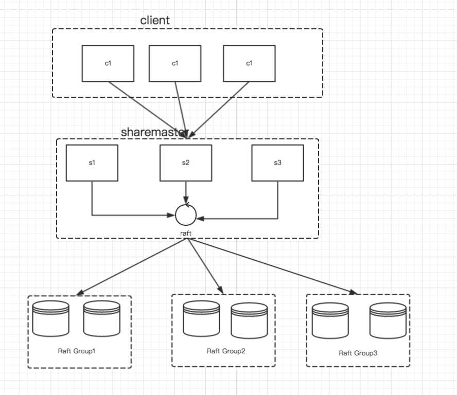

老司机带你用 Go 语言实现分布式数据库
该分布式数据使用了raft 协议作为一致性协议为基础，raft 协议的实现在这里
一个良好的分布式数据实现包括以下几个方面：
1 可用性，即是在一些机器各种故障的情况下是否能够继续提供服务 (a)
2 在分布式环境中，机器之间通过网络通信，他们是否能容忍网络分区 (p）
3 在数据分布到各个机器之中，他们的数据是否能够保持一致 （c）
4 在前的大数据环境之中，对于分布式是否支持水平扩展（Shard）也成为了一个必不可少的
上术的即是CAP 何以一些现在分布式系统基本的属性，当然在也不都能满足，在很多系统里面在一致性上面做了一些妥协，使用了若一致性协议
当然像Dynamo 这样提供W +R > N 这种协议，让用户选择 一致性 也是一种新的思路,对应的开源版本，Cassandra。
shard
分区作为分布式里面一个重要的的特性，他可以通过增加机器来达到增加吞吐量的目的。与此同时也带了一些对于每一个shard的负载的挑战
所以一般在提供接口的客户端使用的接口都一个Partition 这样的接口，让客户按照自己的需求去复写Partition
架构

sharemaster 主要负责根据client 提供的分区规则，将数据储存在不同的group 中，为了sharemaster 有多台机器组成，他们之间使用raft协议来保证一致性
每一个 group 由多台机器组成，他们之间也是通过raft 协议来保证一致性。
在实现分布式数据之中为了简单起见，将数据直接放入到一个map 之中，这里只是想告诉你整个流程是这样的。
持续更行之中，后续把lsm 融入进来。源码注释地址。